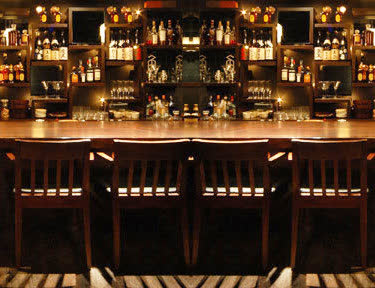

01
バーカドヤBar Kadoya
角地にひっそりと佇む、照明の落ち着いた懐かしいバー。キンキンに冷えた銅のマグカップで出てくる角ハイボールと、しっかり食べられる酒場飯。すべてはこの店から始まりました。
- OPEN
- 18:00〜翌4:00（L.O.3:00）日曜定休
- TEL
- 03-3831-4775
- ADDRESS
- 文京区湯島3-45-3 小林ビル1F

角地のバーから、蕎麦酒場、宮城の肴の店まで。歩いて二分の路地に、四つの灯り。すべて夕方六時から、深夜まで。
私たちは湯島天神下の小さな会社です。角瓶のハイボールを最高の状態で出すこと、生産者の顔が見える素材を使うこと、夜六時から朝四時まで灯りを消さないこと。その三つだけを、四つの店で続けています。
角地にひっそりと佇む、照明の落ち着いた懐かしいバー。キンキンに冷えた銅のマグカップで出てくる角ハイボールと、しっかり食べられる酒場飯。すべてはこの店から始まりました。

代表の故郷、宮城県北部・栗原の農家から届く米と野菜。青菜をどっさり入れた草鍋、一本ずつ焼く焼鳥、栗駒山や萩の鶴といった地酒。路地裏の、小さな宮城。

つまみと酒を楽しんで、最後は蕎麦で〆る。あっさりのせいろから、ピリ辛でクリーミーな坦々出汁まで。深夜三時まで開いている、ちょいと寄りやすい蕎麦酒場。

湯島駅から一分、春日通りに面したテラス席。外の風にあたりながら一杯、〆はもちろん蕎麦。貸切のご相談も承ります。


山崎バーボン樽原酒をキーモルトにした角瓶を、冷凍庫で冷やした銅マグとソーダで。飲みやすいのに飲み飽きない、私たちが心から愛する一杯を、四つの店すべてで同じ値段で。

東京メトロ千代田線 湯島駅 3番・5番出口より徒歩1〜3分 ／ 株式会社けいか堂飲料店